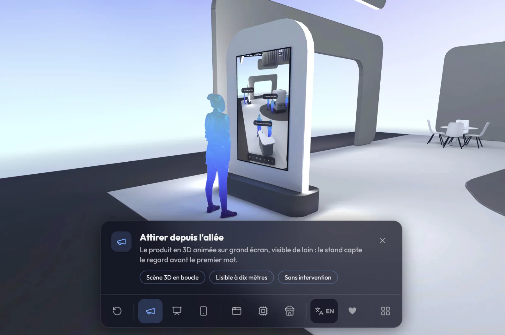
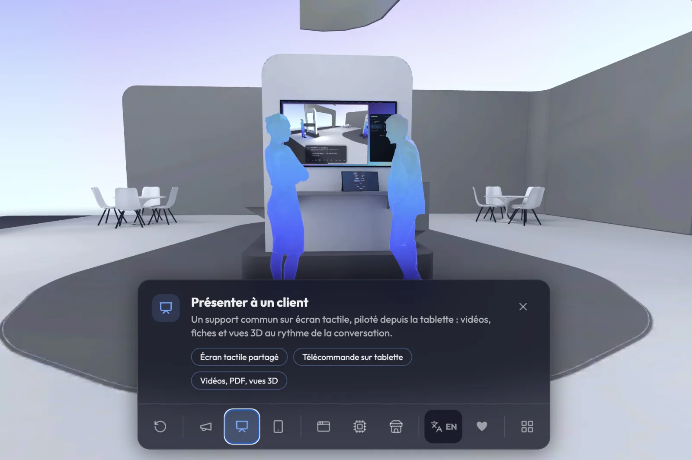
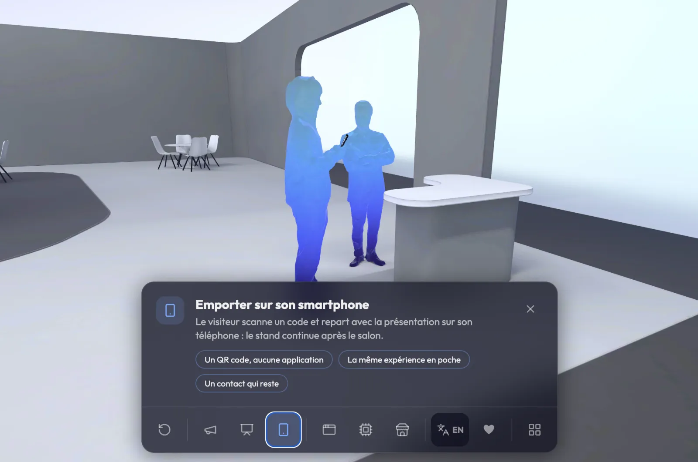
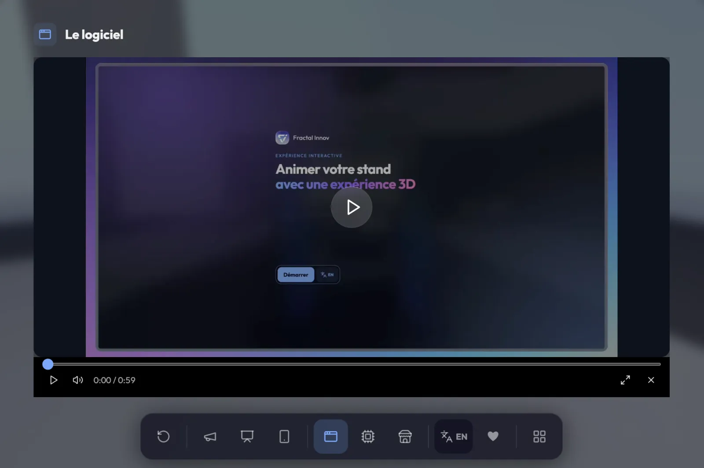
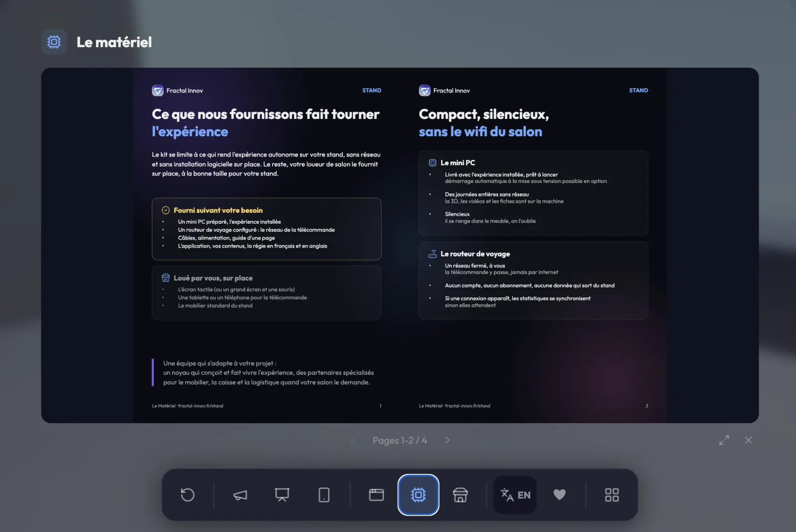
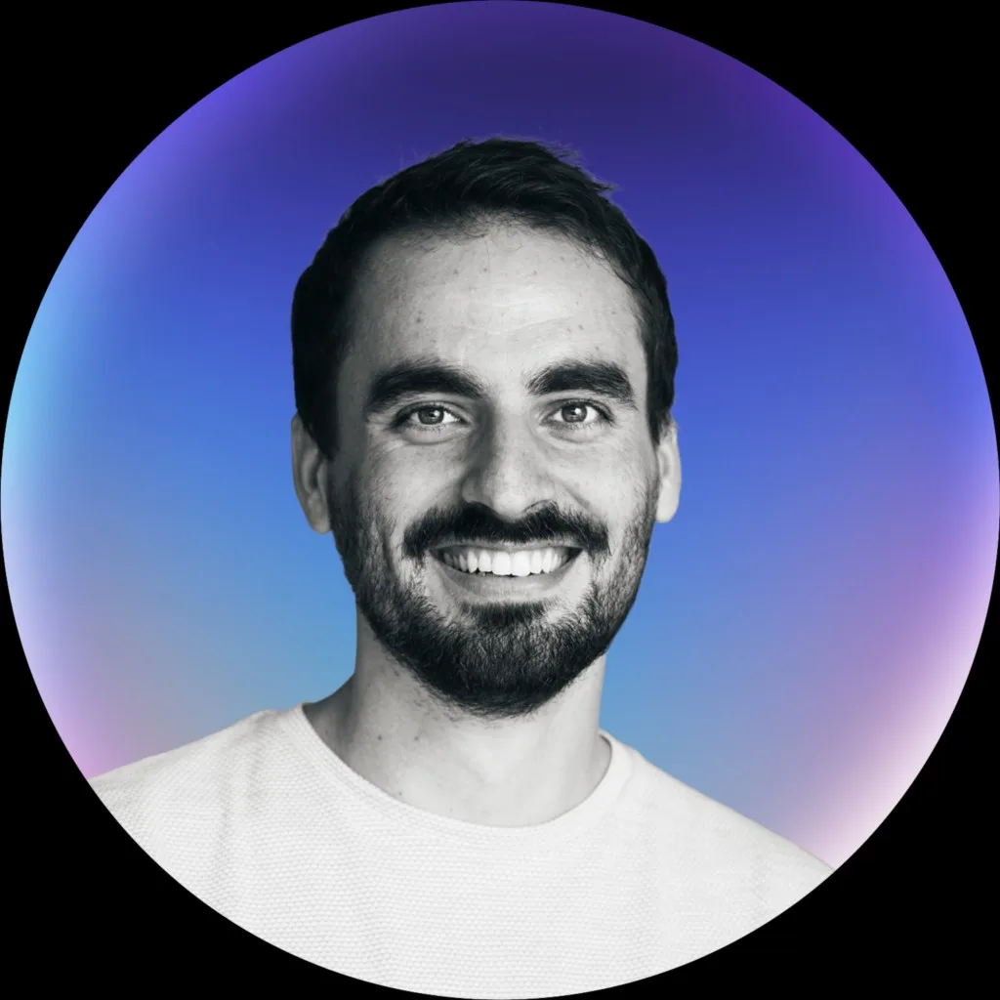

Dans le carton
- Le mini PC préparé, l'expérience déjà installée
- Le routeur de voyage configuré : un réseau fermé, à vous
- Quatre câbles et l'alimentation
- Le guide d'une page
Flight case en option.
STAND met le jumeau 3D de votre produit sur l'écran tactile de votre stand. Le visiteur l'explore du doigt, votre commercial le pilote depuis son téléphone, sans réseau.
Une version publique, sans marque, avec un produit fictif : un stand de salon. À gauche, l'écran tactile du stand, vous êtes le visiteur. À droite, la télécommande, vous êtes le commercial.
Démo partagée : si quelqu'un d'autre pilote en même temps, vous le verrez bouger à l'écran.
Et souvent, votre produit n'est même pas là.
Trop grand, trop fragile, trop cher à déplacer, ou pas encore fini : il reste à l'atelier, et le visiteur ne le voit jamais.
Tant qu'un commercial n'est pas libre, le visiteur attend ou repart. Et quand il est pris en charge, chacun explique le produit à sa façon.
Un produit complexe ne s'explique pas d'un coup d'œil, et vos visiteurs ne restent pas plus longtemps.
STAND le remplace par son jumeau 3D, et laisse à vos commerciaux le soin de conclure.
Les industriels et fabricants dont le produit ne monte pas sur un stand.
Et ceux qui font plusieurs salons par an ou disposent d'un showroom : c'est là que l'investissement se rentabilise.
Le mini PC, le routeur, l'écran tactile : ce sont les moyens. Ce que vous gagnez, c'est un support de vente qui continue à travailler pour vous après le salon.
Un produit qui bouge en 3D sur un grand écran arrête plus de monde qu'un panneau. Le visiteur touche, il reste. En option, un écran de veille 3D animé attire le regard depuis l'allée.
Le jumeau 3D, un parcours guidé et la bonne vidéo au bon moment : le visiteur comprend le problème, la solution et le fonctionnement, sans attendre qu'un commercial se libère.
Le commercial pilote la scène depuis son téléphone (QR code et code PIN, sans application) et s'appuie sur le même récit à chaque conversation.
Le même contenu ressert sur vos prochains salons, en showroom et en rendez-vous commercial. Vos équipes le modifient elles-mêmes, sans développeur. En option, le visiteur repart avec la présentation sur son téléphone, via un QR code.
Un menu simple guide la visite : chaque sujet amène la caméra exactement là où il faut, et des points cliquables ouvrent vidéos, fiches ou explications au moment où la question se pose. Dans la démo, le produit fictif est un stand de salon. Avec STAND, c'est votre machine, votre équipement, votre système.
Le point de départ : le stand entier et ses trois sujets. Le visiteur touche celui qui l'intéresse, la caméra s'y rend toute seule.

Le produit en 3D animée sur grand écran, visible de loin : le stand capte le regard avant le premier mot.

Un support commun sur écran tactile, piloté depuis la tablette : vidéos, fiches et vues 3D au rythme de la conversation.

Le visiteur scanne un code et repart avec la présentation sur son téléphone : le stand continue après le salon.

Une vidéo s'ouvre par-dessus la scène, sans quitter le parcours. C'est là que vos vidéos existantes prennent place, telles quelles.

Un PDF se lit à l'écran, page après page : fiches techniques, tarifs, références. Le visiteur y accède seul, au moment où la question se pose.
Vous n'avez pas de fichiers 3D ? Des photos et des plans suffisent souvent pour démarrer. Nous regardons ensemble ce qui existe, lors de l'appel.
Le kit est conçu pour ne demander personne sur place. Voici ce que vous recevez, ce que vous louez, et ce qui reste à vous.
Flight case en option.
Comme vous le faites déjà, auprès de votre loueur de salon. Nous vous donnons les prérequis à demander.
En option, sur devis : modélisation 3D de votre produit, mobilier et présentoir sur mesure, flight case, écran de veille 3D animé.
Vous êtes propriétaire de l'outil. Le devis est établi après un appel de 30 minutes, une fois votre produit et votre prochain salon connus.
| Ce qui est inclus |
Logiciel
4 900 € HT
|
Prêt à brancher
Kit complet
6 900 € HT
|
|---|---|---|
| Dans les deux formules | ||
| L'expérience STAND à vos couleurs, à partir de vos fichiers 3D | Inclus | Inclus |
| Jumeau 3D et parcours guidé | Inclus | Inclus |
| Vos vidéos et vos fiches, en français et en anglais | Inclus | Inclus |
| Régie protégée par code et télécommande sur téléphone | Inclus | Inclus |
| Application autonome, sans réseau, et statistiques de visite | Inclus | Inclus |
| Analyse de vos fichiers 3D | Inclus | Inclus |
| Notice d'utilisation | Inclus | Inclus |
| En plus, dans le kit complet | ||
| Mini PC préparé, l'expérience installée | Non inclus | Inclus |
| Routeur de voyage configuré, câbles, alimentation | Non inclus | Inclus |
| Configuration initiale | Non inclus | Inclus |
| Guide d'une page, kit prêt à brancher | Non inclus | Inclus |
Sur devis, selon votre scénario : modélisation 3D si vos fichiers ne sont pas exploitables tels quels, mobilier et présentoir avec nos partenaires, flight case, écran de veille 3D animé.
Un premier industriel nous fait déjà confiance : trois salons internationaux, en Europe, aux États-Unis et en Asie, avec le même kit. Nous ne pouvons pas le citer, mais nous pouvons vous raconter comment nous l'avons accompagné.
Vous décrivez votre produit et votre prochain salon. Nous regardons vos fichiers 3D, photos et vidéos en direct, et nous définissons ensemble l'expérience. Le devis suit cet entretien.
Réserver l'appelNous construisons l'expérience à partir de vos fichiers : conversion et optimisation de la scène 3D, parcours guidé, intégration de vos vidéos et de vos fiches. Quatre semaines pour la formule Logiciel.
Le kit arrive prêt à brancher, avec son guide d'une page. Nous vous accompagnons à distance pour l'installation et les réglages, avant le jour J.
Elles sont dedans, au bon moment du parcours, et c'est le visiteur qui les choisit.
Le kit embarque son propre réseau. C'est justement conçu pour ça.
La régie s'ouvre avec un code, les contenus se changent sans développeur, et l'installation tient en quatre câbles.
Non, c'est même l'argument central : le même outil ressert en showroom, en rendez-vous et sur vos salons suivants.
Nous l'évaluons lors de l'appel. Des photos et des plans suffisent souvent pour démarrer, la modélisation est alors chiffrée sur devis.
Personne, et c'est voulu : le kit est conçu pour tourner seul. Nous vous accompagnons avant le salon, pour l'installation et les réglages.
Une autre question ? Elle a sa place dans l'appel de 30 min

Décrivez votre produit et votre prochain salon : nous vous disons comment STAND s'adapte, et à quel prix.